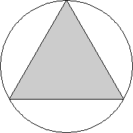
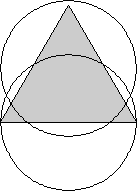
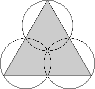
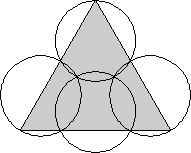
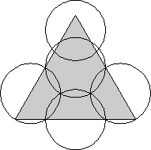
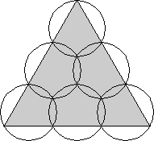
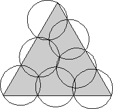
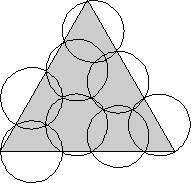
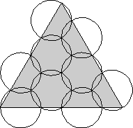

| 1.  | 2.  | 3.  | ||
| s = √3 = 1.732+ Trivial. | s = 2 Trivial. | s = 2√3 = 3.464+ Trivial. |
| 4.  | 5.  | 6.  | ||
| s = 2 + √3 = 3.732+ Proved by Hans Melissen in 1997. | s = 4 Proved by Hans Melissen in 1997. | s = 3√3 = 5.196+ Proved by Hans Melissen in 1997. |
| 7.  | 8.  | 9.  | ||
| s = 5.398+ Found by P. Schuur in 1997. | s = 5.649+ Found by P. Schuur in 1997. | s = 6 Proved by Hans Melissen in 1997. |